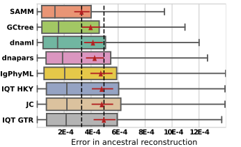

Mutation and selection in B cells
Erick Matsen
Thanks to Sarah Cobey for some of the slides
Structure of a B cell receptor

VDJ recombination

VDJ loci

Somatic hypermutation is AID + repair
The mutations have peculiar biases

The mutations have peculiar biases
Phylogenetics is not straightforward

Incorporating context sensitivity helps performance

What about natural selection?
Remember goal: get per-site selection inferences,
- \(\omega > 1\) indicates positive selection (“invites change”)
- \(\omega < 1\) indicates negative selection (“does not tolerate change”)
Natural selection inferences are also not straightforward
Natural selection inferences are also not straightforward
Natural selection inferences are also not straightforward
Context-sensitive mutation can confound
natural selection inference for B cells.
Correct for mutation rate variation
- \(\lambda_l^{(N-I)}\): nonsynonymous in-frame rate for site \(l\)
- \(\lambda_l^{(N-N)}\): nonsynonymous neutral rate for site \(l\)
- \(\lambda_l^{(S-I)}\): synonymous in-frame rate for site \(l\)
- \(\lambda_l^{(S-N)}\): synonymous neutral rate for site \(l\)
\[
\omega_l = \frac{\lambda_l^{(N-I)} / \lambda_l^{(N-N)}}{\lambda_l^{(S-I)} / \lambda_l^{(S-N)}}
\]
How do we get neutral per-site substitution rate?
Productive vs. out-of-frame receptors
Out-of-frame reads can be used to infer neutral mutation rate.
One can also use passenger alleles
- Yeap, Hwang, Du, Meyers, …, Alt, F. W. Cell, 2015
- Cui, Di Niro, Vander Heiden, Briggs, … , Kleinstein J Immunol, 2016.
and fit a mutation model.
One would like to quantify these biases
Classic work by Kleinstein group

- Yaari, Vander Heiden, Uduman, Gadala-Maria, Gupta, Stern, Kleinstein, Front Immunol, 2013.
- Cui, Di Niro, Vander Heiden, Briggs, … , Kleinstein J Immunol, 2016.
Have extended this framework
We can add overlapping motifs.
Now the \(\theta\) entry for a 5-mer answers the question:
what is this 5-mer telling me that the inner 3-mer did not?
These get automatically zeroed out if not informative.
Feng, Shaw, Minin, Simon, & M, arXiv, in revision for Ann. Applied Stat.
Inferring natural selection
- BASELINe infers overall selection: Yaari, Uduman, Kleinstein Nucleic Acids Research, 2012 [DOI]
- Infer whole-repertoire per-base selection: McCoy, Bedford, M Phil. Trans. Royal Soc. London, 2015 [DOI]
- IgPhyML infers selection in a phylogenetic context: Hoehn, Lunter, & Pybus Genetics, 2017. [DOI]
Motivation

Goal:
Accurate tree inference using not-very-diverged sequences
which are sampled with meaningful counts
A simple infinite-type branching process model
- \(p\): probability of division
- \(q\): probability of mutation
Incorporating model likelihood
- Given sequence data, construct maximum parsimony trees
(there are lots, typically)
- Pick the tree with the highest model likelihood
Validation:
- Simulate tree using a more complex model (arbitrary offspring distribution, finite sampling time, incomplete sampling)
- Simulate sequences down tree (context-sensitive mutation)
- Run inference; compare to simulation
GCtree works in simulation
GCtree finds more common IgH and IgL trees